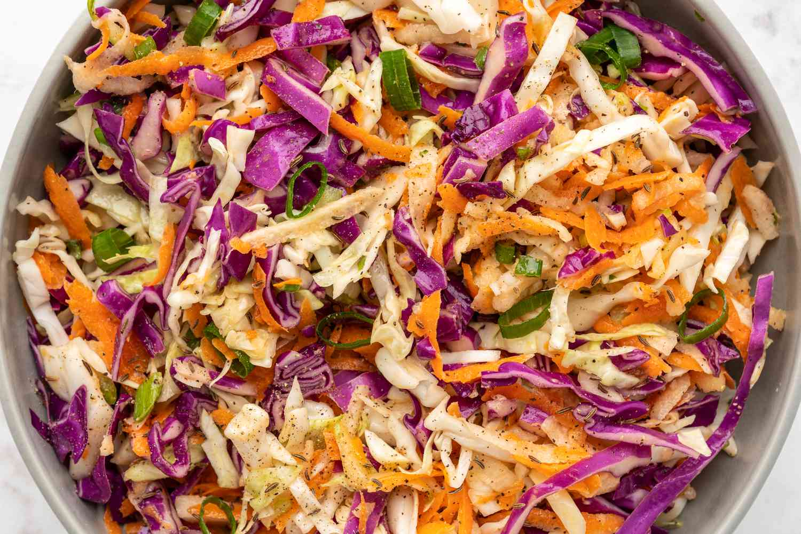

Sweet Restaurant Slaw

Description
This sweet coleslaw recipe tastes like the slaw served at popular fried chicken or fish restaurants. It's excellent with burgers or on top of BBQ pork sandwiches, too!
Ingredients
- 1 (16 ounce) bag coleslaw mix
- 2 tablespoons diced onion
- 3 tablespoons vegetable oil
- 1 tablespoon white vinegar
Steps
- Combine coleslaw mix and onion in a large bowl.
- Whisk salad dressing
- Chill for at least 2 hours before serving.